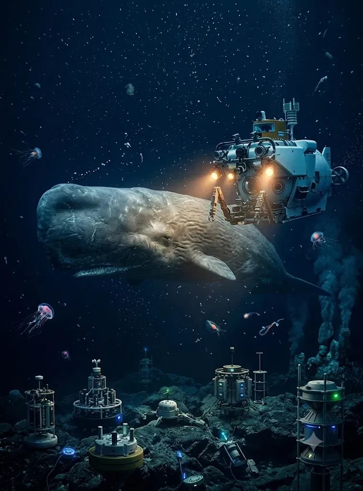

Dashboard Overview
search
⌘ K

Ocean Admin
Administrator
favorite
arrow_upward 8.4%
Ocean Health
92%
Excellent
delete
arrow_upward 12.1%
Plastic Waste
120 Tons
This Week
precision_manufacturing
arrow_upward 5
Active Drones
38
Online
sailing
arrow_upward 18
Marine Species
265
Tracked
water_drop
Water Quality
Excellent
check Ideal Conditions
shield
Risk Level
Low
check All Clear
Live Ocean Monitoring Map
Real-time
Plastic Waste
Coral Bleaching
Ghost Nets
Oil Spill
Healthy Zone
Latest Alerts
Pollution & Analytics
This Month expand_more
Plastic
Health
Water
Temp

Marine Species Tracker

Blue Whale
Balaenoptera musculus
1,245
Stable

Sea Turtle
Chelonia mydas
8,760
Stable

Great White Shark
Carcharodon carcharias
342
Vulnerable

Dugong
Dugong dugon
1,120
Stable